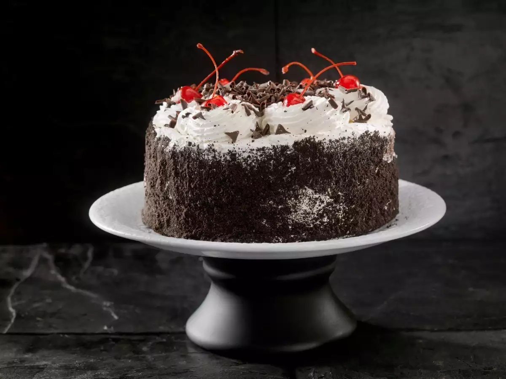

Classic Black Forest Cake

Description
A rich and indulgent chocolate cake layered with whipped cream and cherries,
creating the perfect Black Forest Cake.
Ingredients
- 2 cups all-purpose flour
- 2 cups granulated sugar
- 3/4 cup unsweetened cocoa powder
- 2 teaspoons baking powder
- 1/2 teaspoon baking soda
- 1/2 teaspoon salt
- 1 cup buttermilk
- 1/2 cup vegetable oil
- 2 large eggs
- 2 teaspoons vanilla extract
- 1 cup boiling water
- 2 cups heavy cream
- 1/4 cup powdered sugar
- 1 teaspoon vanilla extract
- 2 cups canned cherries, drained
Steps:
-
Preheat the oven to 350°F (175°C) and grease and flour two 9-inch round cake
pans.
-
In a large bowl, sift together flour, sugar, cocoa powder, baking powder,
baking soda, and salt.
-
Add buttermilk, vegetable oil, eggs, and vanilla extract to the dry
ingredients. Mix until well combined.
-
Stir in boiling water until the batter is smooth. The batter will be thin,
but that's okay.
-
Divide the batter evenly between the prepared pans and bake for 30-35
minutes or until a toothpick inserted into the center comes out clean.
-
Allow the cakes to cool completely before assembling the Black Forest Cake.
-
Whip the heavy cream until soft peaks form. Add powdered sugar and vanilla
extract, and continue whipping until stiff peaks form.
-
Place one cake layer on a serving plate. Spread a layer of whipped cream
over the cake and top with half of the cherries. Place the second cake layer
on top and repeat the process.
-
Optionally, garnish the top with chocolate shavings. Refrigerate before
serving.
Back to menu